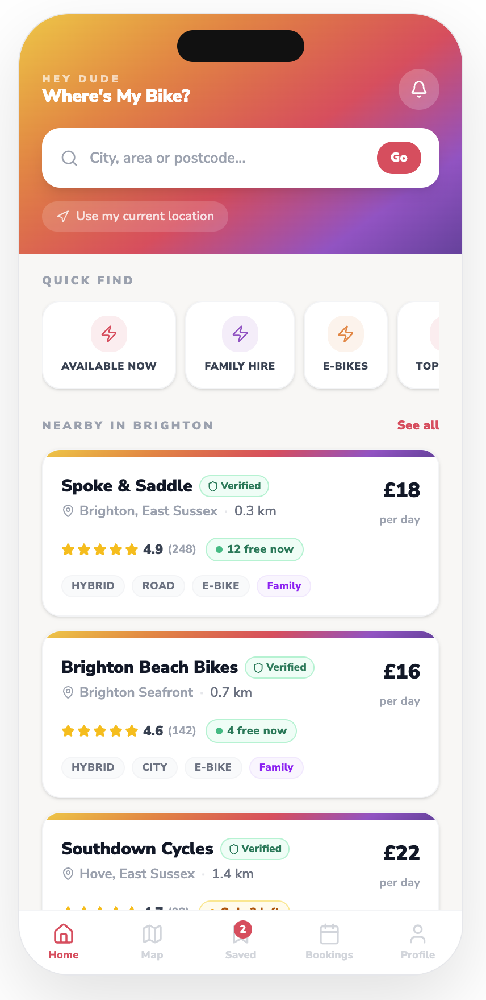
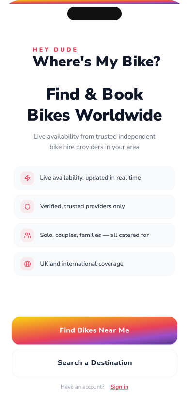
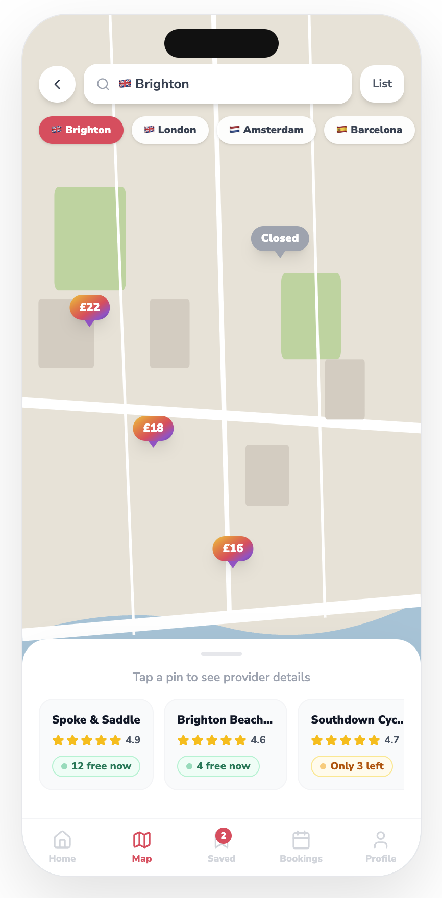
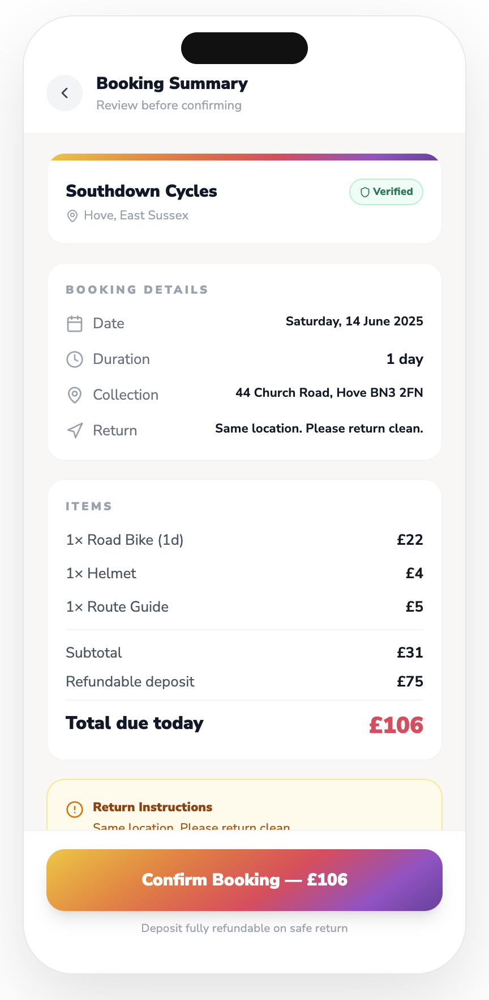

Product design case study
Dude, Where’s My Bike?
Product design and design system for a B2C bike-hire app.
This project explores a mobile bike-hire experience supported by a reusable visual language and documented component system.

Project overview
The product concept helps users move from intent to ride quickly: find nearby bikes, understand availability, reserve or unlock a bike, navigate an unfamiliar area and complete the journey with minimal friction.
My role
- Product design
- UI design
- User-flow definition
- Visual direction
- Component design
- Design-system documentation
- Prototype development
Key design priorities
- Immediate clarity
- Mobile-first interaction
- Accessible typography and contrast
- Consistent reusable patterns
- Clear map and availability information
- Friendly consumer-facing visual design
Selected screens



Design system
The product is supported by a documented design system covering foundations, colour, typography, icons, components and reusable interface patterns.